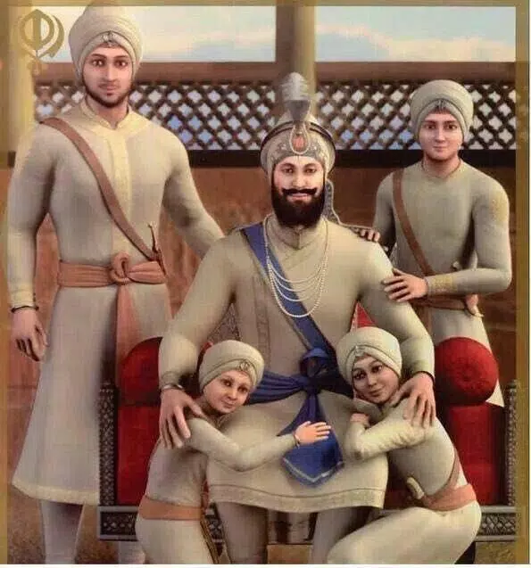

About Guru Gobind Singh Ji
Guru Gobind Singh Ji; born Gobind Das or Gobind Rai;( 22 December 1666 – 7 October 1709) was the tenth and last human Sikh Guru. He was also a warrior, poet, and philosopher. At the age of nine—after his father (Guru Tegh Bahadur) was executed by Emperor Aurangzeb—he was formally installed as the leader of the Sikhs.His four biological sons died during his lifetime – two in battle and two executed by the Mughal governor Wazir Khan.[22][23][24] Among his notable contributions to Sikhism are founding the Sikh warrior community called Khalsa in 1699 and introducing the Five Ks, the five articles of faith that Khalsa Sikhs wear at all times. Guru Gobind Singh is credited with the Dasam Granth whose hymns are a sacred part of Sikh prayers and Khalsa rituals. He is also credited as the one who finalized and enshrined the Guru Granth Sahib as Sikhism's primary scripture and eternal Guru
Battles
Guru Gobind Singh fought 17battles against the Mughal Empire and the kings of Siwalik Hills. Battle of Bhangani (1688), which states chapter 8 of Gobind Singh's Bicitra Natak, when Fateh Shah, along with mercenary commanders Hayat Khan and Najabat Khan,[79] attacked his forces without any purpose. The Guru was aided by the forces of Kripal (his maternal uncle) and a Brahmin named Daya Ram, both of whom he praises as heroes in his text.[80] The Guru's cousin named Sango Shah was killed in the battle, a cousin from Guru Hargobind's daughter.[79] Battle of Nadaun (1691), against the Islamic armies of Mian Khan and his son Alif Khan, who were defeated by the allied forces of Guru Gobind Singh, Bhim Chand and other Hindu kings of Himalayan foothills.[81] The non-Muslims aligned to the Guru had refused to pay tribute to the Islamic officials based in Jammu.[79] In 1693, Aurangzeb was fighting the Hindu Marathas in the Deccan region of India, and he issued orders that Guru Gobind Singh and Sikhs should be prevented from gathering in Anandpur in large numbers.[79][82] Battle of Anandpur (1695) Battle of Guler (1696), first against the Muslim commander Dilawar Khan's son Rustam Khan, near Sutlej river, where the Guru teamed up with the Hindu king of Guler and routed the Muslim army.[83] The commander sent his general Hussain Khan against the armies of the Guru and the Guler kingdom, a war fought near Pathankot, and Hussain Khan was defeated and killed by the joint forces.[83] Battle of Anandpur (1700), against the Mughal army of Aurangzeb, who had sent 10,000 soldiers under the command of Painda Khan and Dina Beg.[84] In direct combat between Guru Gobind Singh and Painda Khan, the latter was killed. His death led to the Mughal army fleeing the battlefield.[84] First Siege of Anandpur, The hill Rajas of northern Punjab regrouped after defeat at Anandpur the previous year and resumed their campaign against Sikh Guru Gobind Singh, joining forces with Gujar and other tribesmens to besiege Anandpur, northeast of Ludhiana. Gujar leader Jagatullah was killed on the first day and the Rajas were driven off after a brilliant defence led by the Guru's son Ajit Singh.[84][85][82] Battle of Taragarh was a battle fought in defence during the Siege of Anandpur. Battle of Nirmohgarh (1702), against the forces of Aurangzeb, led by Wazir Khan reinforced by the hilly Rajas of the Sivalik Hills on the banks of Nirmohgarh. The battle continued for two days, with heavy losses on both sides, and Wazir Khan army left the battlefield. Battle of Basoli (1702), against the Mughal army; named after the kingdom of Basoli whose Raja Dharampul supported the Guru in the battle.[86] The Mughal army was supported by rival kingdom of Kahlur led by Raja Ajmer Chand. The battle ended when the two sides reached a tactical peace.[86] First Battle of Chamkaur (1702), Mughal Army was repulsed.[84] First Battle of Anandpur (1704), Mughal Emperor Aurangzeb sent a fresh force into northern Punjab under General Saiyad Khan, later replaced by Ramjan Khan. Ramjan was mortally wounded in further very heavy fighting around the Sikh stronghold at Anandpur, northeast of Ludhiana, and his force again withdrew.[84] Second Battle of Anandpur, According to scholars, this battle was triggered by the proliferation of armed Sikhs in Anandpur, the increasing numbers creating a shortage of supplies. This led the Sikhs to raid local villages for supplies, food, and forage, which in turn dramatically frustrated the local pahari rajas who forged alliances and mounted an attack on Guru Gobind Singh's patrimony.[87][79] The Mughal general was fatally wounded by Sikh soldiers, and the army withdrew. Aurangzeb then sent a larger army with two generals, Wazir Khan and Zaberdast Khan in May 1704, to destroy the Sikh resistance.[84] The approach the Islamic army took in this battle was to lay a protracted siege against Anandpur, from May to December, cutting off all food and other supplies moving in and out, along with repeated battles.[6] Some Sikh men deserted the Guru during the Anandpur siege in 1704 and escaped to their homes where their women shamed them and they rejoined the Guru's army and died fighting with him in 1705.[88][89] Towards the end, the Guru, his family, and followers accepted an offer by Aurangzeb of safe passage out of Anandpur.[90] However, as they left Anandpur in two batches, they were attacked, and one of the batches with Mata Gujari and Guru's two sons – Zorawar Singh aged 8 and Fateh Singh aged 5 – were taken captive by the Mughal army.[85][91] Both his children were executed by burying them alive into a wall.[6][92] The grandmother Mata Gujari died there as well.[85] Battle of Sarsa (1704), against the Mughal army led by general Wazir Khan; the Muslim commander had conveyed Aurangzeb's promise of a safe passage to Guru Gobind Singh and his family in early December.[91] However, when the Guru accepted the offer and left, Wazir Khan took captives, executed them and pursued the Guru.[93] The retreating troops he was with were repeatedly attacked from behind, with heavy casualties to the Sikhs, particularly while crossing the Sarsa river.[93] Battle of Chamkaur (1704) Regarded as one of the most important battles in Sikh history. It was against the Mughal army led by Nahar Khan;[94] the Muslim commander was killed,[94] while on Sikh side the remaining two elder sons of the Guru – Ajit Singh and Jujhar Singh, along with other Sikh soldiers were killed in this battle.[95][85][96] Battle of Muktsar (1705), the Guru's army was re-attacked by the Mughal army, being hunted down by general Wazir Khan, in the arid area of Khidrana-ki-Dhab. The Mughals were blocked again, but with many losses of Sikh lives – particularly the famous Chalis Mukte (literally, the "forty liberated ones"),[89] and this was the last battle led by Guru Gobind Singh.[7] The place of battle called Khidrana was renamed about a 100 years later by Ranjit Singh to Mukt-sar (literally, "lake of liberation"), after the term "Mukt" (moksha) of the ancient Indian tradition, in honour of those who gave their lives for the cause of liberation.[97] Battle of Baghaur (1707) was fought against the Raja of Bhghaur and the locals of the area. It began over a dispute when some camels of the Guru went and ate the trees of a local gardener. The gardener took the camels and the rider hostage. Sikh negotiated for the release but he refused which led to a battle.[98] Mughal accounts.
Death of Family Members
Guru Gobind Singh's four sons, also referred to as Chaar Sahibzaade (the four princes), were killed during his lifetime – the elder two in a battle with Mughals, and the younger two executed by the Mughal governor of Sirhind.[22] Guru and his two elder sons had escaped the siege of Anandpur in December 1704 and reached Chamkaur, but they were pursued by a large Mughal army.[119] In the ensuing battle, Guru's elder sons, also called the 'Vaade Sahibzaade' fought bravely, but the Mughal army was much larger and well equipped.[120] While Guru was taken to a safe place, Guru's elder sons, Sahibzada Ajit Singh aged 17, and Jujhar Singh aged 13 were killed in the Battle of Chamkaur in December 1704 against the Mughal army.[6] Guru's mother Mata Gujri and his two younger sons got separated from the Guru after escaping the Mughal siege of Anandpur in December 1704; and were later arrested by the forces of Wazir Khan, the Mughal governor of Sirhind.[119] The younger pair, called the 'Chotte Sahibzaade', along with their grandmother were imprisoned in an Open Tower (Thanda Burj), in chilling winter days.[120] Around 26 and 27 December 1704, the younger sons, Sahibzada Fateh Singh aged 6 and Zorawar Singh aged 9, were offered a safe passage if they converted to Islam, which they refused; and subsequently, Wazir Khan ordered them to be bricked alive in the wall.[121][122] Mata Gujri fainted on hearing about her grandsons' death and died shortly thereafter.[119] His adopted son Zorawar Singh Palit whose real name is unknown died in 1708 near Chittorgarh Fort in a skirmish with local soldiers.[123] According to Sainapati, Zorawar Singh Palit had managed to escape in the Battle of Chamkaur and later met the Guru in Rajputana after which he got in a minor scuffle at Chittorgarh and died.[124] According to Sikh historians, Guru Gobind Singh took the harsh news about the execution of his sons with stoic calm, and wrote 'What use is it to put out a few sparks when you raise a mighty flame instead?'.[125]
Tribute to Guru Gobind Singh Ji Maharaj
While Sikh Gurus are generally not portrayed on screen due to certain beliefs in Sikhism[citation needed], a number of Indian films surrounding Guru Gobind Singh's life have been made. These include:[142] Sarbans Dani Guru Gobind Singh, a 1998 Indian Punjabi-language drama film directed by Ram Maheshwari. The film follows Guru's life but he is not directly portrayed by an actor Chaar Sahibzaade, a 2014 Indian computer-animated film by Harry Baweja. It is based on the sacrifices of the sons of Guru Gobind Singh – Ajit Singh, Jujhar Singh, Jorawar Singh, and Fateh Singh. Chaar Sahibzaade: Rise of Banda Singh Bahadur, a 2016 Indian computer-animated film by Harry Baweja. It is a sequel to Chaar Sahibzaade and follows Baba Banda Singh Bahadur's fight against the Mughals under the guidance of Guru Gobind Singh.